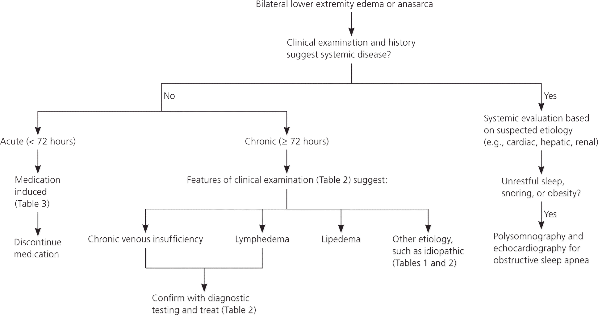
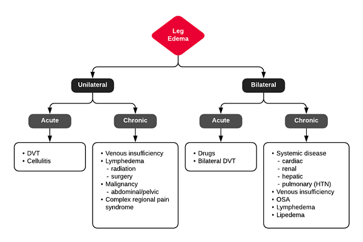

<!-- my-page.html --> 
<link href="style.css" rel="stylesheet">
<script src="https://rawcdn.githack.com/oscarmorrison/md-page/master/md-page.js"></script><noscript>

Title         : Approach to Lower Limb Pedal Edema
Author        : Dr. Jagdish Varma
Affiliation   : Professor of Psychiatry, Bhaikaka University, Karamsad
Toc Depth     : 6

[TITLE]

[TOC]

# Causes of pedal edema


~ Figure { #fig-causes_peripheral_edema; caption: "Causes of peripheral edema." }
~

# Differential Diagnosis of B/L Lower Extremity Edema


~ Figure { #fig-blpedaledema; caption: "D/D of Bilateral pedal edema." }
~

## Systemic causes

### COMMON
- Cardiac (CCF, Restrictive cardiomyopathy, constrictive pericarditis)
- Hepatic (Cirrhosis)
- Renal (Nephritis, Nephrotic syndrome)
- Premenstrual
- Mass effect (Obesity, Pregnancy)
- Thyroid

### UNCOMMON
- Malabsorption - protein loss
- OSA

### RARE
- Angioedema

### MEDICATIONs

- Antidepresasnts
   - Trazodone
   - Mirtazpaine
   - Rare (Escitalopram)
- Antipsychotics
   - Atypicals - Olanzapine, Risperidone
- MS
   - Lithium
   - Valproate
- Other medications
  - Beta-blockers
  - CCBs
  - Hormones
  - NSAIDs

## Local Causes

- Gravitational (Venous insufficiency)
- Lymphedema
- Lipoedema
- Bilateral DVT

# DD of U/L Pedal Edema


~ Figure { #fig-ulpedaledema; caption: "D/D of unilateral pedal edema." }
~

# Evaluation

## History

- Duration: acute (<72h) vs. chronic
- Pain: DVT, CRPS, less severe in venous insufficiency
- Systemic Disease
  - Cardiac: orthopnea, PND
  - Renal: proteinuria
  - Hepatic: jaundice, ascites
- Malignancy: lymphedema
- Improvement with elevation/recumbency: venous insufficiency
- OSA: snoring, daytime somnolence
- Medications: B-blocker, CCB, hormones, NSAID’s

## Physical Exam

- Unilateral / Bilateral
- Pitting / Nonpitting
- Tenderness: DVT, cellulitis
- Varicose veins: venous insufficiency
- Kaposi-Stemmer: inability to pinch dorsum of foot at base of 2nd toe (lymphedema)
- Systemic Disease
  - Cardiac: JVD, crackles
  - Hepatic: ascites, scleral icterus, spider angiomas
  - Brawny, medial maleolar involvement: venous insufficiency

## Key Features Distinguishing Cellulitis

- Typically unilateral and acute
- Often with systemic symptoms (fever, leukocytosis)
- Risk Factors: immunosuppression, previous episodes, DM, PVD

# Lab workup

## First line

  - Full blood count
  - serum albumin
  - lipid profile
  - liver function tests
  - thyroid function tests
  - urea, creat and electrolytes
  - urine-r/m
  - blood pressure
  - electrocardiogram

## 2nd line

  - CXR
  - 2D-echo
  - Trop I
  - Immunological testing - C3, C4, and IgE
  - PSG

# References

1. [ddxof.com](https://ddxof.com/lower-extremity-edema/?sf_action=get_data&sf_data=all&_sf_s=edema)
2. Hopcroft, Keith; Forte, Vincent. Symptom Sorter (p. 304). CRC Press. Kindle Edition.
3. [AAFP](https://www.aafp.org/afp/2013/0715/p102.html)
4. [medicinetoday.com](https://medicinetoday.com.au/sites/default/files/cpd/MT2015-06-026-KUMARASINGHE.pdf)
4. [Lithium](https://www.ejmanager.com/mnstemps/8/8-1589994565.pdf?t=162072811)
5. [Olanzapine](https://www.ncbi.nlm.nih.gov/pmc/articles/PMC2825016/)
